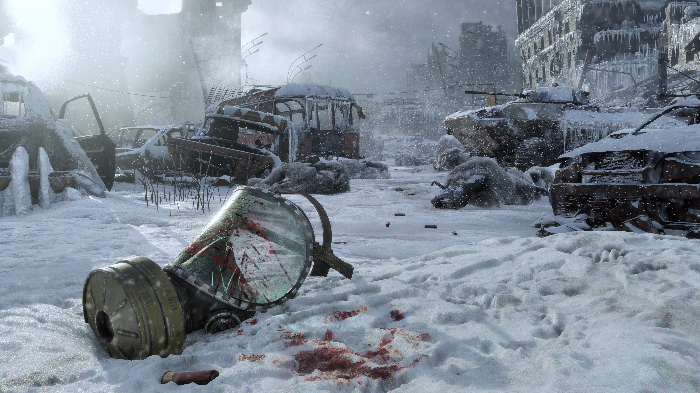

Ну и последнее
Metro Exodus (в России издана под названием «Метро: Исход») — компьютерная игра в жанре шутера от первого лица с элементами survival horror и стелс-экшена. Разработана украинской компанией 4A Games, издана Deep Silver.
Параметры твоего зверя
операционная система: Windows 7/8/10;
процессор: Intel Core i5-4440;
оперативная память: 8 ГБ;
свободное место: 59 ГБ;
видеокарта: GeForce GTX 670 / GeForce GTX 1050 / AMD Radeon HD 7870;
звуковая карта: совместимая с DirectX;
DirectX: 11.
